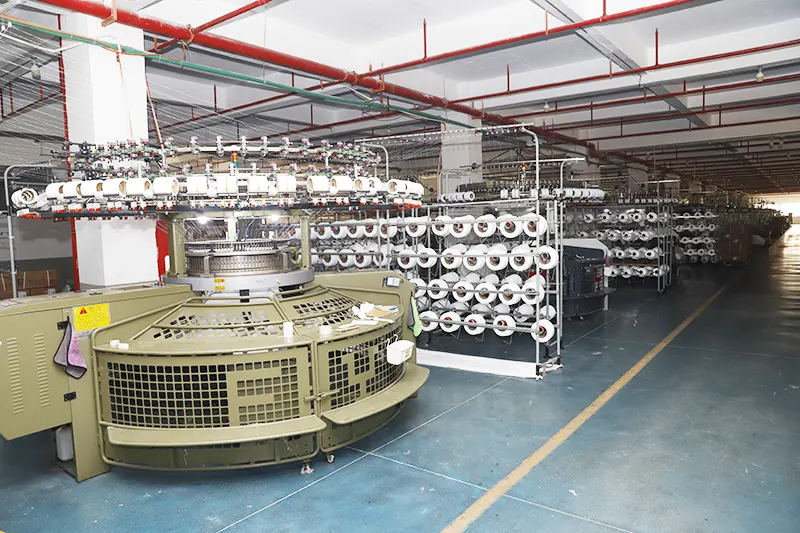
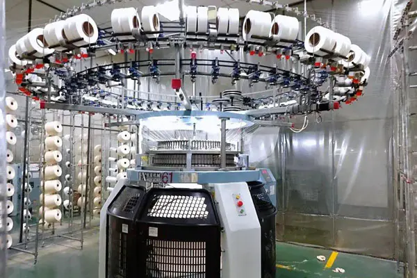
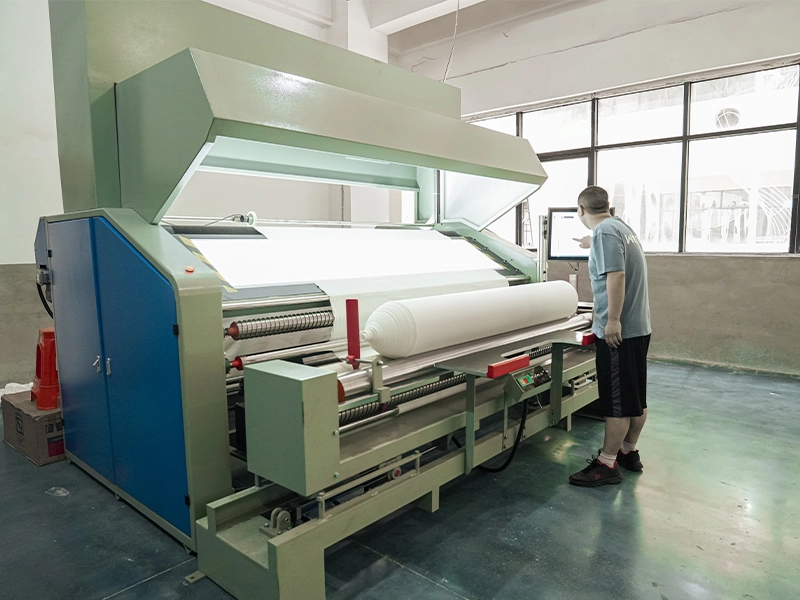

Shanyue Textile's Knitting Workshop bridges the gap between raw filament or spun yarn and finished high-grade fabrics. Equipped with state-of-the-art single and double circular knitting machines, the workshop operates under rigorous temperature and humidity controls to maintain optimal yarn elasticity and prevent lint accumulation. The integration of advanced yarn feed control systems and online automatic defect detectors ensures consistent loop structure, uniform weight distribution, and flaw-free fabric rolls ready for demanding commercial apparel and technical textile applications.
Workshop Gallery
Visual insights into our high-speed circular knitting lines, automated yarn feeding, and rigorous quality inspection.

Modern Circular Knitting Facility
Our circular knitting floor layout features parallel machine tracks designed to minimize material transport distance. With clean-room partitioning, each knitting unit operates in a controlled airflow environment to prevent fiber migration and dust contamination, ensuring the purity of our specialty white and dope-dyed fabrics.

Precision Circular Knitting Machine & Overhead Creels
A closer look at one of our active circular knitting units. The overhead creels systematically feed multiple yarn bobbins into the needles under monitored tension. Specialized positive feeders drive the yarn feed rate to match the rotation of the cylinder, securing a perfectly flat fabric drape and matching thickness across every square meter.

Backlight Fabric Inspection & Open-Width Rolling
Our quality assurance line in action. Before final packaging, every fabric roll is run through an open-width inspection table with high-intensity backlight screens. Trained quality inspectors screen the fabric in real time to locate and flag any needle lines, yarn defects, or weight variances. The rolls are then barcode-labeled and registered to the central ERP system for full batch traceability.
Technical Performance
Production capacity and quality standards of our knitting division.
Equipment Highlights
Innovative systems driving high fabric yield and structural uniformity.
High-End Circular Knitting
- Single & double jersey machines (14G–44G)
- High-speed electronic jacquard selection mechanics
- Interchangeable needle cylinders for flexible texture production
Precision Tension Control
- Positive yarn feeders for micro-regulated stitch length
- Automated creel lint fans to eliminate fiber cross-contamination
- Instant-response optical yarn-break stop motion sensors
QA Inspection & Tracking
- Tension-free open-width rolling to prevent shrinkage skewing
- High-contrast backlight inspection screens with camera assist
- Barcoded database tracking from batch yarn lot to fabric roll